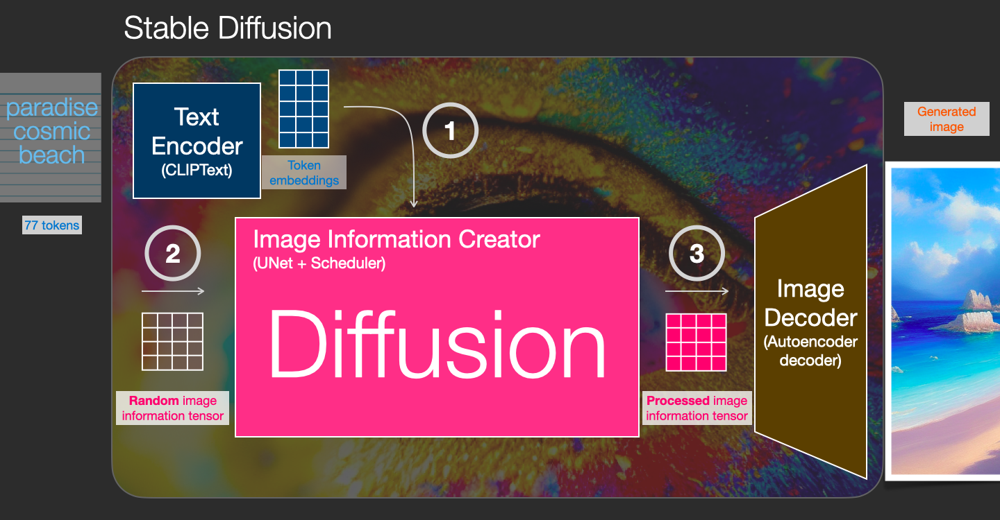
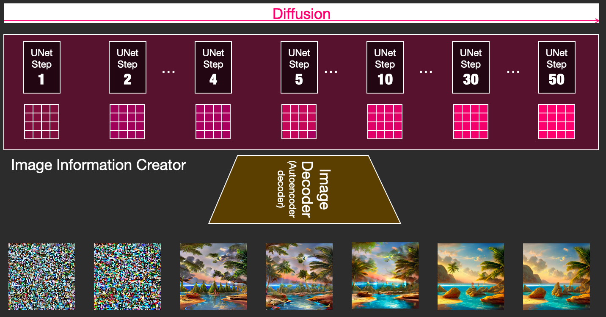
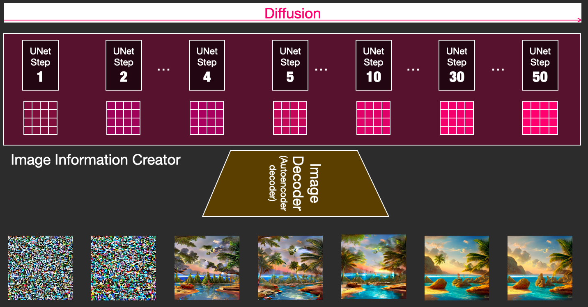

Deep Reinforcement Learning
1 - Introduction
Two broad influences in AI
- logic based – focus on higher, symbolic level and manipulation of these
- learning – from experience

A spectrum of intelligence

Spectrum of different “levels” of intelligence – for Machine Learning (following (Liang 2018)).
Task: How to automatically learn a regression line?
Short break – discussion, solve in small groups.

Question: Can you explain how to fit such a simple linear model towards a set of given data points? Either describe an (or multiple) approaches in your own words at first. Or, if possible, try to formalize the process.
- How can we fit a regression line to a set of data points?
- Do you know other possible Machine Learning methods that we could use for this task?
Types of Learning

Google Translate
Google Translate allows you to explore unfamiliar lands and communicate in different languages.
Instant camera translation allows you to see the world in your language by just pointing your camera lens at the foreign text (Gu 2019).

Overview common ML algorithms
.")
Example: Generative Adversarial Networks


Example: Generative Models – Diffusion 2
  

Example: Generative Models – Diffusion 3

What is Reinforcement Learning (RL)?
Goal of RL
Actively learn a good strategy for an agent from interaction with the environment.

Reinforcement Learning
Reinforcement learning is learning what to do—how to map situations to actions—so as to maximize a numerical reward signal. The learner is not told which actions to take, but instead must discover which actions yield the most reward by trying them (Sutton und Barto 2018).
Categorization of Reinforcement Learning Agents
- Value Based
- No Policy (Implicit)
- Value Function
- Policy Based
- Policy
- No Value Function
- Actor Critic
- Policy
- Value Function

Explore or Exploit Information for Decision Making

Decision Making: sticking to a good past experience might make you miss out on even better options, but at least you can be confident to get something good.